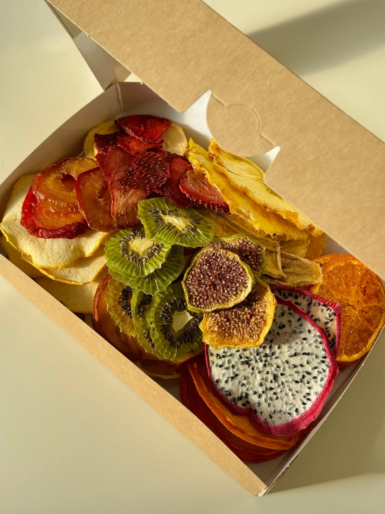
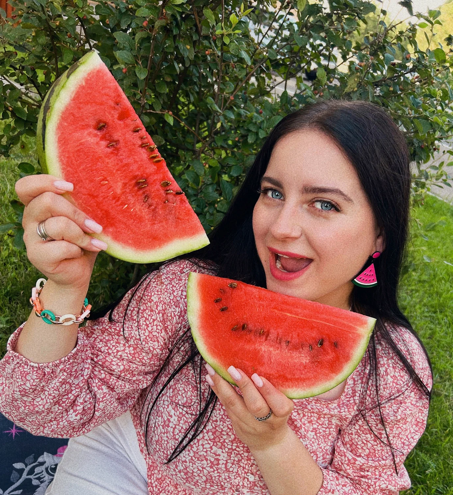

Вкусы и фасовка
Соберите любимые снеки в корзину. Можно взять немного всего.

Цены по прайсу от 11.11.2026. Наличие и итоговую стоимость подтвердит менеджер.
Летом 2020 года Юлия начала сушить фрукты и ягоды. Первую пастилу делала из дачных яблок, сливы и смородины.
Сегодня мы создаём пастилу, фрипсы, джерки и десерты. И продолжаем придумывать новые сочетания — в том числе вместе с вами.
Познакомиться поближе
Соберите любимые снеки в корзину. Можно взять немного всего.
Скопируйте список и отправьте нам в ВК или Telegram. Подтвердим наличие и стоимость.
После согласования и оплаты отправим СДЭК или Почтой России — по России и СНГ.
Бесплатная доставка — от 5 000–7 000 ₽ в зависимости от региона. Точные условия уточнит менеджер.
Добавьте товары в корзину, проверьте список, скопируйте его и отправьте в официальные сообщения бренда. Менеджер согласует состав заказа, доставку и оплату.
Состав зависит от конкретного продукта. В ассортименте есть мёд, шоколад, орехи и молочные ингредиенты. Перед покупкой уточните полный состав и аллергены.
Да. Обсудите с командой повод, количество наборов и желаемое наполнение. Цену и сроки сборки подтвердит менеджер.
В публикации от 16.04.2026 указаны партнёрские магазины «Ферма вкуса»: Юбилейная, 40/5 и Баныкина, 19 ст. 2. График и наличие уточняйте перед поездкой.